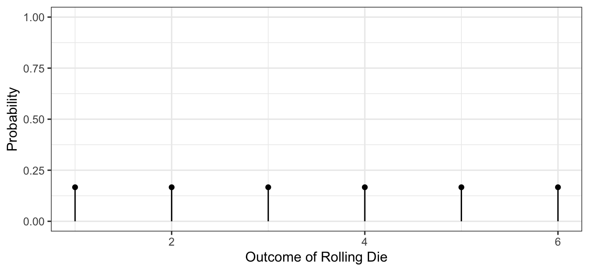
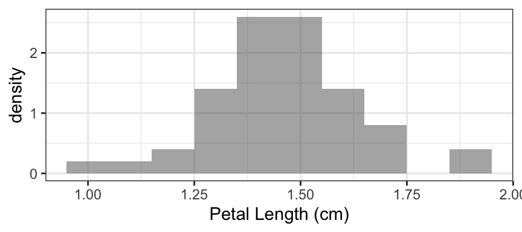
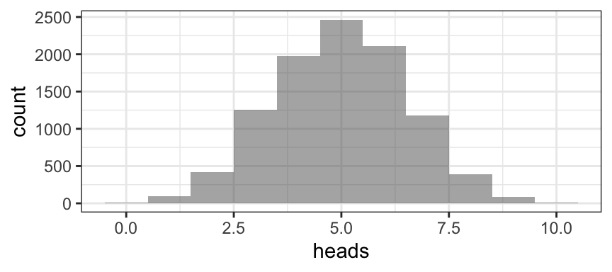
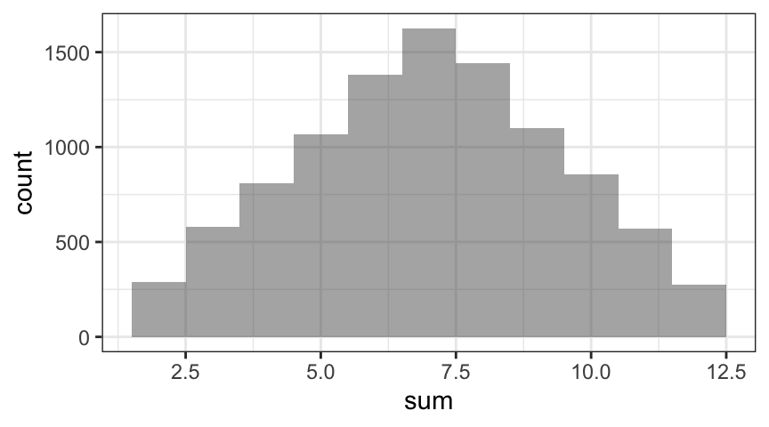
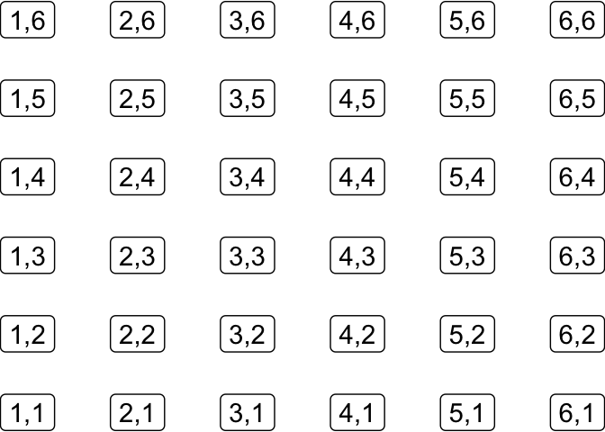
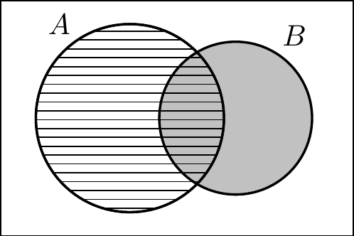
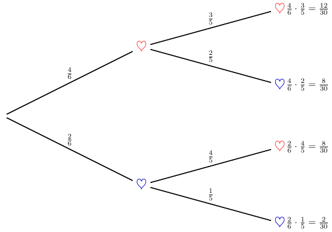
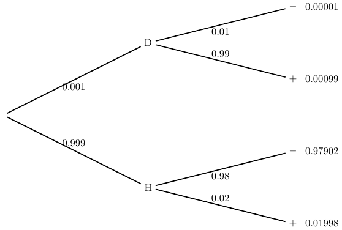
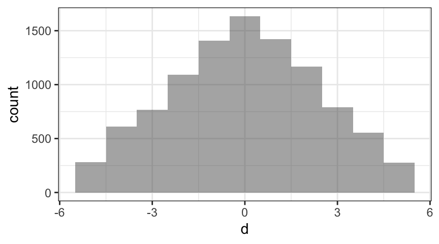

3 Probability
3.1 Key Definitions and Ideas
The terms below will help us talk about randomness and probability.
random process A repeatable process that has multiple unpredictable potential outcomes.
Although we sometimes use language that suggests that a particular result is random, it is really the process that is random, not its results.
outcome A potential result of a random process.
sample space The set of all possible potential outcomes of a random process.
event A subset of the sample space.
That is, a set of outcomes (possibly all or none of the outcomes).Statisticians often use capital letters from the beginning of the alphabet for events.
trial One repetition of a random process.
mutually exclusive events. Events that cannot happen on the same trial.
probability A numerical value between 0 and 1 assigned to an event to indicate how often the event occurs (in the long run).
random variable A random variable is a variable whose value is a numerical outcome of a random process.
probability distribution The distribution of a random variable. (Remember that a distribution describes what values? and with what frequency?)
3.1.1 Examples of random variables
Below are some random processes that result in a number.
- Roll a die and record the number.
- Roll two dice and record the sum.
- Flip 100 coins and count the number of heads.
- Sample 1000 people and count how many approve of the job the president is doing.
Note: Statisticians usually use capital letters (often from the end of the alphabet) for random variables, like this:
Let \(X\) be the number of heads in 10 flips of a fair coin. What is \(\Prob(X = 5)\)?
As an example of a probability distribution, we can first consider a discrete random variable. Most of the examples of random variables given above are discrete. In other words, the values they can take on come from a set containing a finite number of possible values. For example, if you roll a 6-sided die and record the number that comes up, there are only size possible outcomes, which are equally likely: the integers 1, 2, 3, 4, 5 and 6. For discrete random variables, the probability distribution shows all the possible values on the x-axis, and the likelihood of observing each of those values on the y-axis. Since there are a finite number of possible values that can be observed, these likelihoods are actually the probabilities of observing each outcome, and the sum of all the probabilities must be 1 (see Section 3.3 for details). For our example, where we rolled a die and recorded the value:
Things are a bit more complicated for continuous random variables (the ones that can take on any numerical value). Here, there sample space (the set of possible distinct values the random variable can take on) is infinite. One consequence of this fact is that the interpretation of the y-axis values of the probability distribution changes. The y-axis will still indicate the relative likelihood of observing any given value of the random variable. However, here the random variable can take on an infinite number of possible values. In this case, we can’t interpret the y-axis values as probabilities. They y axis units are called “Likelihood” or “Density”, and they indicate the relative frequency of each outcome. For a densityplot, Density is scaled such that the integral over all possible x-values (the area under the curve) is 1. (For a histogram, Density is scaled so that the total area of all the boxes added together is 1.) We can think of the histograms and density plots we have been creating using continuous variables from R datasets as attempts to use data to approximate the distributions of random variables. For example, we might consider the growth of flower petals of the iris Iris setosa as a random process, and let X be a random variable that is the length of each iris petal. We could plot a histogram to approximate the distribution of X using the variable Petal.Length from the iris data (from the datasets package in base R).

3.2 Calculating Probabilities Empirically
We would like to calculate the probability of an event \(A\), denoted \(\Prob(A)\).
In the next section, we will see how to calculate probabilities based on the Axioms of probability, and logic. But first, we will consider ways to make the calculations empirically – based on observing many repetitions of a random process (in real life or in a computer simulation) and observing how often an event of interest occurs.
Random processes are repeatable, so practically, we can calculate empirical probabilities by simply repeating the process over and over and keeping track of how often the event \(A\) occurs. For example, we could flip a coin 10,000 times and see what fraction are heads.1
\[ \mbox{Empirical Probability} = \frac{\mbox{number of times $A$ occured}} {\mbox{number of times random process was repeated}} \]
Modern computing provides another way to compute empirical probabilities. If we can simulate our random process on a computer, then we can repeat the process many times very quickly.
Example 3.1 Q. What is the probability of getting exactly 5 heads if you flip a fair coin 10 times? Using our random variable notation, let \(X\) be the number of heads in 10 flips of a fair coin. We want to know \(\Prob(X = 5)\).
A. The rflip() function simulates flipping a coin as many times as we like.
rflip(10)
Flipping 10 coins [ Prob(Heads) = 0.5 ] ...
T H H H T H T H T H
Number of Heads: 6 [Proportion Heads: 0.6]The do() function allows us to execute an R command (“do” something in R) over and over, as many times as we choose. Here, our rflip() command simulates 10 coin-flips. First we’ll “do” our command three times and show the results. Then we’ll do it 10,000 times and store the results in a variable called tosses, so we can create a table and a plot showing the empirical distribution.
do(3) * rflip(10)do(10000) * rflip(10) -> tosses
tally(~ heads, data = tosses, format = "prop")heads
0 1 2 3 4 5 6 7 8 9 10
0.0008 0.0091 0.0422 0.1254 0.1982 0.2466 0.2114 0.1176 0.0392 0.0088 0.0007 gf_histogram( ~ heads, data = tosses, binwidth = 1)
Based on this sample, we would estimate that \(\Prob(X = 5) \approx 0.2466\).
Example 3.2 Q. Use simulations to estimate the probability of rolling doubles using two fair standard dice.
A. We can simulate rolling a die with the following code:
1:6 # the numbers 1 through 6[1] 1 2 3 4 5 6resample(x = 1:6, size = 10) # ten rolls of a 6-sided die [1] 2 1 4 1 1 2 6 2 5 4The first 2 input arguments of resample() are x (the set of values from which you want to resample) and size (the number of items to choose from x). You can also think of size as the number of times to sample from x, if you are imagining sampling one item from x each time.
If we do this 10,000 times for each of two dice…
die1 <- resample(1:6, 10000)
die2 <- resample(1:6, 10000)
# let's check that things look reasonable
head(die1) [1] 6 2 1 6 6 4head(die2)[1] 1 2 4 4 1 2Then we can tabulate how often the two numbers matched in one of two ways:
tally( ~(die1 == die2) ) # NOTE the double == here(die1 == die2)
TRUE FALSE
1634 8366 prop( ~(die1 == die2) ) # NOTE the double == hereprop_TRUE
0.1634 So the probability appears to be approximately 0.1634.
Example 3.3 Q. Use simulation to estimate the probability of rolling a sum of 8 when rolling two fair six-sided dice.
A. We have already generated 10000 random rolls, so let’s just reuse them. (Alternatively, we could generate new rolls.)
s <- die1 + die2
# R adds element-wise:
# first entry of die1 + first of die2,
# second to second, etc.
prop( ~ (s == 8) )prop_TRUE
0.1443 We can estimate the probability of any sum the same way.
tally( ~ s )s
2 3 4 5 6 7 8 9 10 11 12
291 579 810 1067 1382 1625 1443 1102 855 571 275 tally( ~ s, format = "percent" ) # if we are too lazy to divide by 10000 ourselvess
2 3 4 5 6 7 8 9 10 11 12
2.91 5.79 8.10 10.67 13.82 16.25 14.43 11.02 8.55 5.71 2.75 Here’s a slightly fancier version that puts all the information into a data frame. Note the use of the function data.frame() to create the data table:
rolls <- data.frame( first = die1, second = die2, sum = die1 + die2 )
head(rolls)tally( ~sum, data = rolls, format = "proportion")sum
2 3 4 5 6 7 8 9 10 11 12
0.0291 0.0579 0.0810 0.1067 0.1382 0.1625 0.1443 0.1102 0.0855 0.0571 0.0275 gf_histogram( ~ sum, data = rolls, binwidth = 1) # setting width is important for integer data
3.3 Calculating Probabilities Theoretically
The theoretical method combines
- Some basic facts about probability (the Probability Axioms and Rules),
- Some assumptions about the particular situation at hand, and
- Mathematical reasoning (arithmetic, algebra, logic, etc.).
3.3.1 The Three Probability Axioms
Let \(S\) be the sample space and let \(A\) and \(B\) be events.
- Probability is between 0 and 1: \(0 \le \Prob(A) \le 1\).
- The probability of the sample space is 1: \(\Prob(S) = 1\).
- Additivity: If \(A\) and \(B\) are mutually exclusive, then \(\Prob(A \tor B) = \Prob(A) + \Prob(B)\).
Notation Notes
\(\Prob(A \tor B)\) is the probability that either \(A\) or \(B\) (or both) occurs. Often this is written \(\Prob(A \union B)\). \(A \union B\) is usually read “\(A\) union \(B\)”. The union of two sets is the set that contains all elements of both sets.
\(\Prob(A \tand B)\) is the probability that both \(A\) and \(B\) occur. This is also written \(\Prob(A \intersect B)\). \(A \intersect B\) is usually read “\(A\) intersect \(B\)”.
Saying that \(A\) and \(B\) are mutually exclusive is the same as saying that there are no outcomes in \(A\intersect B\), i.e., that \(A \intersect B = \emptyset\).
3.3.2 Other Probability Rules
These rules all follow from the axioms (although we will not necessarily prove them all here).
The Addition Rule
If events \(A\) and \(B\) are mutually exclusive, then \(\Prob(A \tor B) = \Prob(A) + \Prob(B)\). That’s the additivity axiom. A more general rule holds even when the events are not mutually exclusive: \[ \Prob(A \tor B) = \Prob(A) + \Prob(B) - \Prob(A \tand B) \; . \]
The Complement Rule
\[ \Prob(\tnot A) = 1 - \Prob(A) \]
The Equally Likely Rule
If the sample space consists of \(n\) equally likely outcomes, then the probability of an event \(A\) is given by
\[ \Prob(A) = \frac{ \mbox{number of outcomes in $A$}}{n} = \frac{ \card{A} }{\card{S} }\; . \]
Warning: One of the most common mistakes in probability is to apply this rule when the outcomes are not equally likely.
Example 3.4 Here are several examples where we can (and cannot) use the Equally Likely Rule.
Coin Toss: \(\Prob(\mbox{heads}) = \frac{1}{2}\) if heads and tails are equally likely.
Rolling a Die: \(\Prob(\mbox{even}) = \frac{3}{6}\) if the die is fair (each of the six numbers equally likely to occur).
Sum of two Dice: the sum is a number between 2 and 12, but these numbers are NOT equally likely.
There are 36 equally likely combinations of two dice:

Let \(X\) be the sum of two dice.
- \(\Prob(X = 3) = \frac{2}{36} = \frac{1}{18}\)
- \(\Prob(X = 7) = \frac{6}{36} = \frac{1}{6}\)
- \(\Prob(\mbox{doubles}) = \frac{6}{36} = \frac{1}{6}\)
Punnet Squares
This example comes from animal or human genetics. Here, we consider a gene with two alleles: A is the dominant allele, and a is the recessive one. Each individual has two copies of every gene, so there are three possible combinations of alleles (called “genotypes”): AA, Aa, and aa. AA and Aa individuals have the dominant A physical characteristic (called the “phenotype”); aa individuals have the recessive a phenotype. Imagine that two Aa individuals mate and produce offspring. In this Aa \(\times\) Aa cross, if A is the dominant allele, then the probability of the dominant phenotype is \(\frac{3}{4}\), and the probability of the recessive phenotype is \(\frac{1}{4}\) because each of the four possible crossings is equally likely.
| A | a | |
| A | AA | Aa |
| a | aA | aa |
Example 3.5 Q. Suppose a family has two children and one of them is a boy. What is the probability that the other is a girl?
A. We’ll make the simplifying assumption that boys and girls are equally likely (which is not exactly true). Under that assumption, there are four equally likely families: BB, BG, GB, and GG. But only three of these have at least one boy, and we already know our family has at least one boy, so our sample space is really \(\{BB, BG, GB\}\). Of these, two have a girl as well as a boy. So the probability is \(2/3\).
We illustrate the restricted sample space (3 outcomes in a box) in the figure below. Two of these three outcomes have at least one girl. (See Equation 3.1.)
\[ \mbox{GG} \ \ \ \fbox{BG \ \ \ GB \ \ \ BB} \tag{3.1}\]
We can also think of this in a different way. In our original sample space of four equally likely families,
\[ \begin{aligned} \evProb{at least one girl} & = 3/4 \; , \\ % \mbox{ , and } \\ \evProb{at least one girl \emph{and} at least one boy} & = 2/4 \; , \tand\\ \frac{2/4}{3/4} & = 2/3 \; ; \end{aligned} \]
so \(2/3\) of the time when there is at least one boy, there is also a girl. We will denote this probability as \(\Prob(\mbox{at least one girl} \mid \mbox{at least one boy})\). We’ll read this as “the probability that there is at least one girl given that there is at least one boy”. See Figure 3.1 and Definition 3.1.

Definition 3.1 Let \(A\) and \(B\) be two events such that \(\Prob(B) \neq 0\).
The of \(A\) given \(B\) is defined by \[
\Prob(A \mid B) = \frac{\Prob(A \intersect B) }{ \Prob(B) } ; .
\] If \(\Prob(B) = 0\), then \(\Prob(A \mid B)\) is undefined.
Example 3.6 A class of \(5\)th graders was asked what color should be used for the class T-shirt, red or purple. The table below contains a summary of the students’ responses:
| Red | Purple | |
| Girls | \(7\) | \(9\) |
| Boys | \(10\) | \(8\) |
Q. Suppose we randomly select a student from this class. Let \(R\) be the event that a child prefers a red T-shirt. Let \(B\) be the event that the child is a boy, and let \(G\) be the event that the child is a girl.
Express each of the following probabilities in words and determine their values:
- \(\Prob(R)\),
- \(\Prob(R \mid B)\),
- \(\Prob(B \mid R)\),
- \(\Prob(R \mid G)\),
- \(\Prob(G \mid R)\),
- \(\Prob(B \mid G)\).
A. The conditional probabilities can be computed in two ways. We can use the formula from the definition of conditional probability directly, or we can consider the condition event to be a new, smaller sample space and read the conditional probability from the table.
\(\Prob(R) = 17/34 = 1/2\) because \(17\) of the \(34\) kids prefer red
This is the probability that a randomly selected student prefers red
\(\displaystyle \Prob(R \mid B) = \frac{10/34}{18/34} = \frac{10}{18}\) because \(10\) of the \(18\) boys prefer red
This is the probability that a randomly selected boy prefers red
\(\displaystyle \Prob(B \mid R)= \frac{10/34}{17/34} = \frac{10}{17}\) because \(10\) of the \(17\) students who prefer red are boys.
This is the probability that a randomly selected student who prefers red is a boy.
\(\displaystyle \Prob(R \mid G) = \frac{7/34}{16/34} = \frac{7}{16}\) because \(7\) of the \(16\) girls prefer red
This is the probability that a randomly selected girl prefers red
\(\displaystyle \Prob(G \mid R) = \frac{7/34}{17/34} = \frac{7}{17}\) because \(7\) of the \(17\) kids who prefer red are girls.
This is the probability that a randomly selected kid who prefers red is a girl.
\(\displaystyle \Prob(B \mid G) = \frac{0}{16/34} = 0\) because none of the girls are boys.
This is the probability that a randomly selected girl is a boy.
One important use of conditional probability is as a tool to calculate the probability of an intersection.
Lemma 3.1 Let \(A\) and \(B\) be events with non-zero probability. Then
\[ \begin{aligned} \Prob(A \intersect B) & = \Prob(A) \cdot\Prob(B \mid A) \\ & = \Prob(B) \cdot\Prob(A \mid B) ;. \end{aligned} \]
This follows directly from the definition of conditional probability by a little bit of algebra and can be generalized to more than two events.
Example 3.7 Q. If you roll two standard dice, what is the probability of doubles? (Doubles is when the two numbers match.)
A. Let \(A\) be the event that we get a number between \(1\) and \(6\) on the first die. So \(\Prob(A) = 1\). Let \(B\) be the event that the second number matches the first. Then the probability of doubles is \(\Prob(A \intersect B) = \Prob(A) \cdot\Prob(B \mid A) = 1 \cdot\frac{1}{6} = \frac{1}{6}\) since regardless of what is rolled on the first die, \(1\) of the \(6\) possibilities for the second die will match it.
Example 3.8 Q. A \(5\)-card hand is dealt from a standard \(52\)-card deck. What is the probability of getting a flush (all cards the same suit)?
A. Imagine dealing the cards in order. Let \(A_i\) be the event that the \(i\)th card is the same suit as all previous cards. Then
\[ \begin{aligned} \evProb{flush} & = \Prob(A_1 \intersect A_2 \intersect A_3 \intersect A_4 \intersect A_5) \\ & = \Prob(A_1) \cdot \Prob(A_2 \mid A_1) \cdot \Prob(A_3 \mid A_1 \intersect A_2) \\ & \quad \cdot \Prob(A_4 \mid A_1 \intersect A_2 \intersect A_3) \\ & \quad \cdot \Prob(A_5 \mid A_1 \intersect A_2 \intersect A_3 \intersect A_4) \\ & = 1 \cdot \frac{12}{51} \cdot \frac{11}{50} \cdot \frac{10}{49} \cdot \frac{9}{48} \; \end{aligned} \]
Example 3.9 Q. In a bowl are 4 red Valentine hearts and 2 blue Valentine hearts.
If you reach in without looking and select two of the Valentines, let \(X\) be the number of blue Valentines. Fill in the following probability table.
| value of \(X\) | 0 | 1 | 2 |
| probability |
A.
\[ \begin{aligned} \Prob(X = 2) &= \Prob(\mbox{first is blue} \tand \mbox{second is blue}) \\ &= \Prob(\mbox{first is blue}) \cdot \Prob(\mbox{second is blue} \mid \mbox{first is blue}) \\ &= \frac26 \cdot \frac15 \\ &= \frac{2}{30} \;. \end{aligned} \]
Similarly
\[ \begin{aligned} \Prob(X = 0) &= \Prob(\mbox{first is red} \tand \mbox{second is red}) \\ &= \Prob(\mbox{first is red}) \cdot \Prob( \mbox{second is red} \mid \mbox{first is red}) \\ &= \frac46 \cdot \frac35 \\ &= \frac{12}{30} \end{aligned} \]
Finally, \(\Prob(X = 1) = 1 - \Prob(X = 0) - \Prob(X = 2) = 1 - \frac{14}{30} = \frac{16}{30}\).
We can represent this using a tree diagram as well.

The edges in the tree represent conditional probabilities which we can multiply together to the probability that all events on a particular branch happen. The first level of branching represents what kind of Valentine is selected first, the second level represents the second selection.
Example 3.10 Q. Suppose a test correctly identifies diseased people \(99\)% identifies healthy people \(98\)% Furthermore assume that in a certain population, one person in \(1000\) has the disease. If a random person is tested and the test comes back positive, what is the probability that the person has the disease?
A. We begin by introducing some notation. Let \(D\) be the event that a person has the disease. Let \(H\) be the event that the person is healthy. Let \(+\) be the event that the test comes back positive (meaning it indicates disease – probably a negative from the perspective of the person tested). Let \(-\) be the event that the test is negative.
\(\Prob(D) = 0.001\), so \(\Prob(H) = 0.999\).
\(\Prob(+ \mid D) = 0.99\), so \(\Prob(- \mid D) = 0.01\).
\(\Prob(+ \mid D)\) is called the sensitivity of the test. (It tells how sensitive the test is to the presence of the disease.)
\(\Prob(- \mid H) = 0.98\), so \(\Prob(+ \mid H) = 0.02\).
\(\Prob(- \mid H)\) is called the specificity of the test.
\(\!\!\!\!\!\)
\[ \begin{aligned} \Prob(D \mid +) & = \frac{\Prob(D \intersect +)}{\Prob(+)} \\[5mm] &= \frac{\Prob(D) \cdot \Prob(+ \mid D)}{\Prob(D \intersect +) + \Prob(H \intersect +) } \\[5mm] & = \frac{0.001 \cdot 0.99}{0.001 \cdot 0.99 + 0.999 \cdot 0.02} = 0.0472 \end{aligned} \]
A tree diagram is a useful way to visualize these calculations.

This low probability surprises most people the first time they see it. This means that if the test result of a random person comes back positive, the probability that that person has the disease is less than \(5\)%, even though the test is “highly accurate”. This is one reason why we do not routinely screen an entire population for a rare disease – such screening would produce many more false positives than true positives.
Of course, if a doctor orders a test, it is usually because there are some other symptoms. This changes the a priori probability that the patient has the disease. Exercise 3.9 gives you a chance to explore this further.
3.3.3 Independence
Definition 3.2 Let \(A\) and \(B\) be two events such that \(\Prob(B) = \Prob(B \mid A)\). Such events are called independent.
When events are independent, then
\[ \Prob(A \tand B) = \Prob(A) \cdot \Prob(B \mid A) = \Prob(A) \cdot \Prob(B) \;. \] This makes probability calculations much simpler – but it only applies for independent events.
Example 3.11 Q. What is the probability of rolling double sixes with standard 6-sided dice?
A. Let \(A\) be the event that the first die is a 6 and let \(B\) be the event that the second die is a 6. Since \(A\) and \(B\) are independent, \(\Prob(A \tand B) = \Prob(A) \cdot \Prob(B) = \frac16 \cdot \frac16 = \frac{1}{36}\).
Example 3.12 Q. What is the probability of flipping a coin five times and getting 5 heads?
A. Since each coin toss is independent of the others, the probability of getting five heads is the product of the probabilities of each coin coming up heads:
\[ \Prob(\mbox{5 heads in 5 flips}) = (0.5)^5 = 0.03125 \]
Example 3.13 Q. A manufacturer claims that 99% of its parts will still be functioning properly two years after purchase. If you purchase 10 of these parts, what is the probability that all 10 of them are still functioning properly two years later (assuming the manufacturer’s claim is correct)?
A. Let \(G_i\) be the event that part \(i\) is still functioning properly after two years. We want to calculate
\[ \Prob(G_1 \tand G_2 \tand\cdots\tand G\_{10});. \] If we assume the lifetimes of the parts are independent, then
\[ \begin{aligned} \Prob(G_1 \tand G_2 \tand\cdots\tand G_{10}) & = \underbrace{.99 \cdot.99 \cdot.99 \cdots.99}_{\mbox{10 of these}} \\ & = .99^{10} \\ & = 0.9043821\;. \end{aligned} \]
The independence assumption may or may not be valid. That depends on the manufacturing process. For example, if the primary way a part goes bad is that the package is dropped during shipping, then if you by a box of 10 and the first part is bad, they will all be bad. And if the box was handled carefully and never dropped, and the first part used is good, they will likely all be good. So in that extreme case, the probability that all 10 are functioning properly after two years is 99%.
3.4 Exercises
Exercise 3.1 Free throw Amy
Amy is a 92% free throw shooter. If she shoots 100 free throws after practice, what is the probability that she makes at least 95 of them? Use simulation to estimate this probability.
(You can use rflip() to simulate shooting free throws. The prob argument lets you set the probability. In this case, you need to set it to \(0.92\). Then think of a head as a made free throw and a tail as a missed free throw.)
Solution.
set.seed(123) # so we get the same simulated results each time we compile.
sims <- do(1000) * rflip(100, prob = 0.92)
tally( ~ heads > 95, data = sims)heads > 95
TRUE FALSE
94 906 So the probability that Amy makes more than 95 shots in 100 attempts is approximately 0.094
Exercise 3.2 Dice
Use simulation to estimate the probability of rolling a difference of 2 when rolling two fair six-sided dice.
Make a histogram showing the results for all of the possible differences.
Solution.
d <- die1 - die2
tally( ~ d )d
-5 -4 -3 -2 -1 0 1 2 3 4 5
279 610 765 1092 1409 1634 1423 1165 792 555 276 prop( ~ (d == 8) )prop_TRUE
0 gf_histogram( ~ d, binwidth = 1) # setting width is important for integer data
Exercise 3.3 Cards
Use simulation to estimate the probability that when dealing 5 cards from a standard (well-shuffled) deck of 52 cards all five are diamonds.
You can simulate the deck of cards using the numbers 1 through 52 and consider the numbers 1 through 13 to be the diamonds. Instead of using resample(), which would allow you to get the same card more than once, we need to use sample(), which does not. (You can also use deal() which does the same thing.)
sample(1:52, 5)[1] 10 38 43 25 37sample(1:52, 5)[1] 19 15 36 24 31deal(1:52, 5)[1] 46 43 20 29 40deal(1:52, 5)[1] 17 24 10 11 37There is another way to make the calculation, using the function sum(). R can tell you how many cards are below 14 using sum() because R turns TRUE into 1 and FALSE into 0 when you do a sum.
sum( sample(1:52, 5) < 14 ) [1] 2sum( sample(1:52, 5) < 14 )[1] 0sum( sample(1:52, 5) < 14 )[1] 1You can use do() to do this many times. (Three is not many! We just do a small number here for illustration purposes.)
do(3) * sum( sample( 1:52, 5 ) < 14 )
Solution.
tally( ~ sum, do(10000) * sum(sample(1:52, 5) < 14) )sum
0 1 2 3 4 5
2218 3992 2826 853 107 4 Exercise 3.4 Quality control
Parts in a manufacturing plant go through two quality control checks before they are shipped. 99% of parts pass inspection A and 98% parts pass inspection B. 0.5% fail both inspections.
What percentage of parts pass both inspections?
Solution.
$\Prob(\mbox{fail at least one}) = \Prob(\mbox{fail A or fail B}) =
\Prob(\mbox{fail A}) + \Prob(\mbox{fail B}) - \Prob(\mbox{fail both})
= 0.01 + 0.02 - 0.05 = 0.025$.
So $\Prob(\mbox{pass both}) = 1 - 0.025 = 0.975$.Exercise 3.5 Sum of dice
Let \(X\) be the sum of the results of rolling two fair six-sided dice.
- What is \(\Prob(X \mbox{ is even} \tand X < 5)\)?
- What is \(\Prob(X \mbox{ is even} \tor X < 5)\)?
Solution. The probability that \(X\) is even and less than five is \(\Prob(X = 2 \tor X = 4) = 1/36 + 3/36 = 4/36 = 0.1111111\).
The probability that \(X\) is even or less than five is \(\Prob(\mbox{X is even}) + \Prob(X = 3) = 18/36 + 2/36 = 20/36 = 0.5555556\).
Exercise 3.6 Difference in dice
Let \(Y\) be the difference between the larger and smaller number when two fair dice are rolled. (So if you roll a 2 and a 4, then the value of \(Y\) is 2.)
- What is \(\Prob(Y = 2)\)?
- What are the other possible values of \(Y\)?
- Calculate the probability for each possible value of \(Y\) and put those values in a table.
Solution. \(Y = 2\) for rolls of \((3,1)\), \((4,2)\), \((5,3)\), and \((6,4)\). Each of these can also happen in the other order, so the probability is \(8/36 = 2/9 = 0.2222222\).
| value of \(Y\) | 0 | 1 | 2 | 3 | 4 | 5 |
|---|---|---|---|---|---|---|
| probability | 6/36 | 10/36 | 8/36 | 6/36 | 4/36 | 2/36 |
c(6,10,8,6,4,2) / 36[1] 0.16666667 0.27777778 0.22222222 0.16666667 0.11111111 0.05555556Exercise 3.7 Kids
For the probabilities below, you may assume the that for each birth, the probability of having a boy or a girl is \(1/2\) and that each birth is independent of other births.
- Suppose a family has three kids. What is the probability that at least one of the kids is a boy?
- Suppose a family has three kids, at least one of which is a girl. Now what is the probability that at least one of the kids is a boy?
- Suppose a family has three kids, at least two of which are girls. Now what is the probability that at least one of the kids is a boy?
Exercise 3.8 **A device with two parts
A device is assembled from two primary parts. 2% of the first type of part are defective and 3% of the other type of part are defective. The device only functions properly if both parts are functioning properly.
What assumption do you need to make to calculate the probability that a device assembled in this way will function properly? Is it a reasonable assumption in this situation? Explain.
What is the probability that that a device assembled in this way will function properly?
Solution. Assuming failure of each part is independent of failure of the other, the probability that both function properly is \(0.98 \cdot 0.97 = 0.9506\).
Alternatively, if we assume that failures are mutually exclusive, then the probability of failure would be \(0.02 + 0.03 = 0.05\) and the probability of proper functioning would be \(0.95\).
The independence assumption is reasonable if, for example, the two parts are made by separate manufacturing processes and the device is assembled by randomly selecting a part of each type, which may or may not be a good part right from the start.
The mutually exclusive failure is probably harder to justify, since likely there will be some situations in which both parts fail.
Exercise 3.9 Testing for a disease, revisited
In the situation of Example Example 3.10, how does the answer change if the baseline probability of having the disease is \(1/10\) instead of \(1/1000\)? (This might be the case if a person is exhibiting symptoms, for example.)
Solution.
# P(D) = 0.001
0.001 * 0.99 / (0.001 * 0.99 + 0.999 * 0.02)[1] 0.0472103# P(D) = 0.10
0.1 * 0.9 / (0.10 * 0.99 + 0.9 * 0.02)[1] 0.7692308Exercise 3.10 Smoking and lung cancer
According to the CDC, “Compared to nonsmokers, men who smoke are about 23 times more likely to develop lung cancer and women who smoke are about 13 times more likely.” According to the American Lung Association: “In 2008, 21.1 million (18.3%) women smoked in the United States compared to 24.8 million (23.1%) men.”
If you learn that a person is a smoker and no nothing else about the person, what is the probability that the person is a woman?
If you learn that a woman has been diagnosed with lung cancer, and you know nothing else about her, what is the probability that she is a smoker?
If you learn that a man has been diagnosed with lung cancer, and you know nothing else about him, what is the probability that he is a smoker?
Solution.
# a)
21.1 / ( 21.1 + 24.8)[1] 0.459695Part b is the most interesting (once you can do that, you can do part c the same way). Let \(W\) be the event that someone is a woman, \(S\) that they are a smoker, and \(C\) that they get cancer. Let \(x = \Prob( C | W \intersect S^c)\). Then \(\Prob( C | W \intersect S ) = 13x\).
\[ \begin{aligned} \Prob( S | W \intersect C ) & = \frac{ \Prob(S \intersect W \intersect C) }{\Prob(W \intersect C)} \\ & = \frac{ \Prob(S \intersect W \intersect C) } {\Prob(S \intersect W \intersect C) + \Prob( S^c \intersect W \intersect C)} \end{aligned} \]
So we just need to compute the two probabilities in the denominator.
\[ \begin{aligned} \Prob(S \intersect W \intersect C) &= \Prob(W) \cdot \Prob(S \mid W) \cdot \Prob(C \mid W \intersect S) \\ &= \Prob(W) \cdot 0.183 \cdot 13x \\ \Prob(S^c \intersect W \intersect C) &= \Prob(W) \cdot \Prob(S^c \mid W) \cdot \Prob(C \mid W \intersect S^c) \\ &= \Prob(W) \cdot 0.817 \cdot x \end{aligned} \]
After factoring out \(x \cdot \Prob(W)\), the arithmetic is now easy:
# b) After factoring out a constant from numerator and denominator we are left with
0.183 * 13 / ( 0.183 * 13 + .817 * 1 )[1] 0.744368# c) After factoring out a constant from numerator and denominator we are left with
0.231 * 23 / ( 0.231 * 23 + .769 * 1 )[1] 0.8735613Note: Another approach to part b is to consider the sample space to be only the women. If you do it that way, you can avoid mentioning any probabilities involving \(W\). (In the end, they factor out anyway.) Of course, you can do a similar thing for the men.
Exercise 3.11 Parts by day
A manufacturing plant has kept records that show that the number of parts produced each day and on the proportion of parts that are defective.
- If you order a part from this company, what is the probability that it was produced on a Monday or a Thursday?
- If you order a part from this company and it is defective, what is the probability that it was produced on a Monday or a Thursday?
- If you order a part from this company and it functions properly, what is the probability that it was produced on a Monday or Thursday?
Express your answers to 3 significant digits and avoid internal rounding.
Solution. You may find a tree diagram useful here to visualize these probabilities.
# part a
.20 + .27[1] 0.47# part b: P( Wed-Thur | defective ) = P( Wed-Thur and defective ) / P(defective)
a <- .20 * .02 + # Monday and defective
.27 * .03 # Thursday and defective
b <- .25 * .015 + # Tuesday and defective
.28 * .01 # Wednesday and defective
a / (a + b)[1] 0.6487936# part c: P( Wed-Thur | good ) = P( Wed-Thur and good ) / P(good)
c <- .20 * .98 + # Monday and good
.27 * .97 # Thursday and good
d <- .25 * .985 + # Tuesday and good
.28 * .99 # Wednesday and good
c / (c + d)[1] 0.4666021Exercise 3.12 Acceptance sampling
An engineer orders a shipment of 100 identical parts.
Before accepting the shipment, he tests three of them.
If the they all test good, he accepts the entire shipment.
If any of them tests bad, he rejects the shipment.
Given the good price he has gotten on these parts, the engineer would be satisfied if at least 95%
- Suppose that there are 5 bad parts in the shipment. What is the probability that the shipment is rejected (even though the engineer would actually have been satisfied with the shipment)?
- Suppose that there are 10 bad parts in the shipment. What is the probability that the shipment is accepted (even though the engineer would not be satisfied with this shipment)?
Solution.
- The engineer will accept if all three are among the 95 good parts. The probability of accepting is
95/100 * 94/99 * 93/98[1] 0.8559988The probability of rejecting is
1 - 95/100 * 94/99 * 93/98[1] 0.1440012- Now we accept if all three are among the 90 good parts. The probability of accepting is
90/100 * 89/99 * 88/98[1] 0.7265306We see that this is not the most effective test. It could be improved by taking a larger sample, and similar arithmetic could be used to determine how well a new protocol works (perhaps one that takes a larger sample).
Exercise 3.13 M&M’s
The blue M&M was introduced in 1995. Before then, the color mix in a bag of plain M&Ms was 30% Brown, 20% Yellow, 20% Red, 10% Green, 10% Orange, 10% Tan. Afterward it was 24% Blue , 20% Green, 16% Orange, 14% Yellow, 13% Red, 13% Brown.
A friend of mine has two bags of M&Ms, and he tells me that one is from 1994 and one from 1996. He won’t tell me which is which, but he gives me one M&M from each bag. One is yellow and one is green. What is the probability that the yellow M&M came from the 1994 bag?
Solution. Let’s use the following notation for events related to this problem:
- \(G_4 =\) green from 1994 bag
- \(G_6 =\) green from 1996 bag
- \(Y_4 =\) yellow from 1994 bag
- \(Y_6 =\) yellow from 1996 bag
Then our question becomes \[ \begin{aligned} \Prob( Y_4 \tand G_6 \mid (Y_4 \tand G_6) \tor (Y_6 \tand G_4) ) & = \frac{\Prob( Y_4 \tand G_6 ) } {\Prob( Y_4 \tand G_6) \tor (Y_6 \tand G_4)} \\ & = \frac{\Prob( Y_4 \tand G_6 ) } {\Prob(Y_4 \tand G_6) + \Prob(Y_6 \tand G_4)} \end{aligned} \]
The individual probabilities can be worked out as \[ \Prob(Y_4 \tand G_6) = \Prob(Y_4) \cdot \Prob(G_6 \mid Y_4) = .20 \cdot .20 = 0.04 \]
\[ \Prob(Y_6 \tand G_4) = \Prob(Y_6) \cdot \Prob(G_4 \mid Y_6) = .14 \cdot .10 = 0.014 \]
Putting this all together we get
% O: .20 Y, .10 G % N: .14 Y, .20 G
.20 * .20 / (.20 * .20 + .14 * .10) [1] 0.7407407A tree diagram could be used to depict these probabilities as well.
This has actually been done a couple of times in history, including once by mathematician John Kerrich while he was a prisoner of war during World War II.↩︎